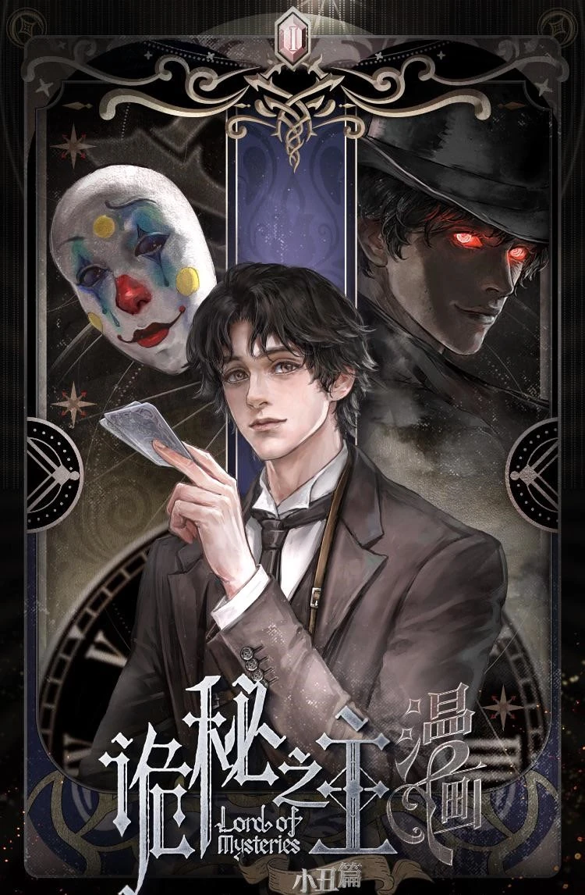

Novel - Lord of the mysteries
The story follows Zhou Mingrui, a modern man who wakes up in a parallel industrial- era world inside the body of a university graduate named Klein Moretti. To survive and navigate hidden supernatural threats, Klein joins a special task force called the Nighthawks and secretly creates the "Tarot Club," a mysterious gathering in a realm above the gray fog where he poses as a god-like entity named "The Fool".

“The Fool that doesn’t belong to this era; The Mysterious Ruler above the gray fog; The King of Yellow and Black who wields good luck.”— Klein Moretti Lord of the mysteries